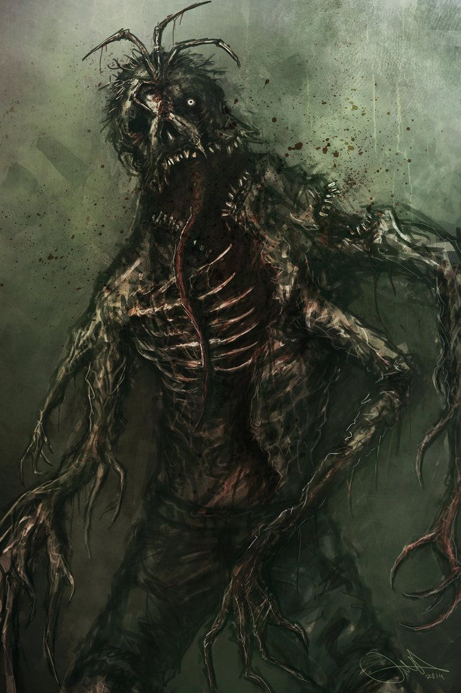
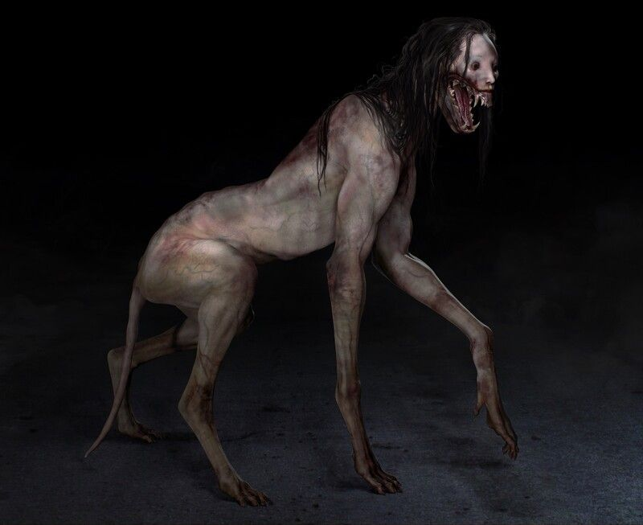
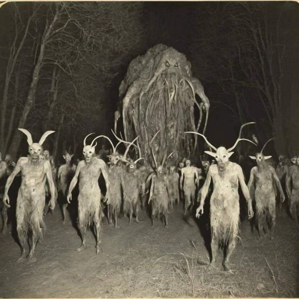
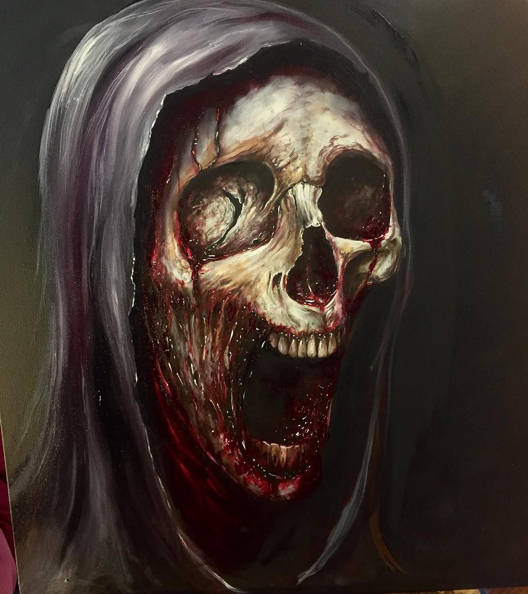

DIVISÃO S.K.U.L.L — ARQUIVOS OPERACIONAIS
Confronto contra os Mortos
Status: Concluída
Baixas: Nenhuma
Primeira missão registrada da Divisão S.K.U.L.L. A equipe foi deslocada às pressas para um sítio rural construído sobre os restos de um hospital de guerra desativado. Relatos indicavam movimentação noturna e ruídos abaixo do solo.
Foi confirmado um surto de mortos-vivos originado de valas médicas improvisadas. A área foi isolada com sucesso, evitando contato civil. Durante a operação, um mercenário local demonstrou eficiência incomum no combate corpo a corpo.
Observação: O indivíduo foi integrado oficialmente à equipe como Raffa Borges Pinto.
Primeiro indício de que os eventos não eram isolados.
Exorcismo em Asilo
Status: Concluída
Baixas: 2 civis
Um asilo psiquiátrico apresentou surtos violentos após um paciente demonstrar comportamento incompatível com qualquer diagnóstico conhecido. Relatos incluem vozes múltiplas, força sobre-humana e automutilação ritualística.
A equipe conteve o indivíduo até a chegada do padre Luis Gregório de Níssa, que realizou um exorcismo completo. O paciente encontra-se atualmente em estado mental estável.
Duas mortes de cuidadores antes da contenção.
Assassino das Oito Portas
Status: FRACASSO
Baixas: Múltiplas
Entidade humanoide associada a uma lenda urbana local. Aparência: figura alta, esguia, vestes pretas, chapéu e máscara branca com sorriso fixo.
A criatura manifesta-se exclusivamente em ambientes com portas, atacando indivíduos que conhecem sua lenda e se encontram sozinhos. O cientista Albert Schneider identificou comportamento sádico: a entidade prolonga o medo antes de executar a vítima.

Entidade permanece ativa.
Velha da Estrada
Status: Contida
Baixas: Nenhuma
Entidade assume forma de uma idosa pedindo carona até um ponto de ônibus. Durante o trajeto, faz perguntas específicas. Caso o motorista falhe, a vítima é levada para a floresta.
Nenhuma morte confirmada, porém vítimas apresentam traumas psicológicos severos. A equipe não conseguiu destruí-la, mas Albert propôs realocação contínua até uma estrada isolada, posteriormente interditada pelo governo.

Caçada Noturna
Status: Exterminada
Baixas: Nenhuma
Criatura desnutrida, ágil e extremamente agressiva, responsável por ataques noturnos em trilhas florestais. Demonstra comportamento de caça em grupo quando possível.

Acampamento das Cabras
Status: Concluída
Baixas: 1 civil
Entidade central de grande porte comandava múltiplas criaturas usando crânios de cabras. O ambiente simulava um culto ritualístico.
Após neutralização do alvo principal, as criaturas cessaram. Identificou-se posteriormente que uma das entidades era um civil disfarçado.
Erro fatal de identificação.
Rancho Skinwalker
Status: Exterminada
Baixas: 2 civis
Criatura metamórfica assumindo formas de animais do rancho. Tentou infiltrar-se entre a equipe imitando sons e comportamentos.
Assobios específicos forçaram a entidade a revelar sua forma real, permitindo eliminação.

Cemitério Vivo
Status: Concluída
Baixas: Nenhuma
Reanimação em massa de cadáveres. A equipe combateu durante toda a noite até o amanhecer, quando as entidades cessaram espontaneamente.
Homem do Túnel
Status: FRACASSO TOTAL
Sobreviventes: 1
Entidade extremamente poderosa vinculada a um túnel urbano. Relatos indicam que apenas um indivíduo pode sair vivo após a entrada.
Albert aparentava ter identificado um método de enfrentamento, porém foi morto antes de registrar. Lei Zhang e Akil Mohamed foram as primeiras vítimas.

Somente Raffa Borges Pinto retornou.